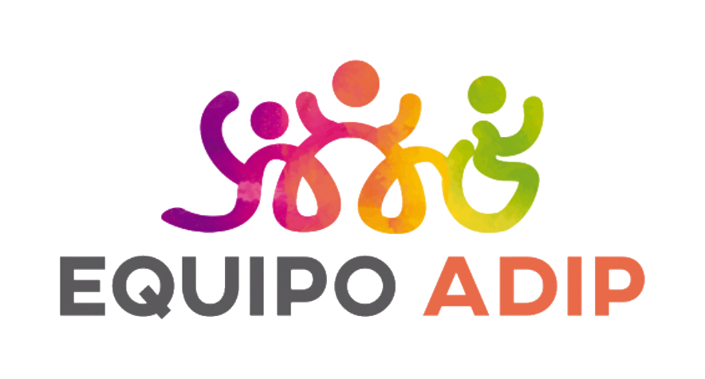

<!doctype html>
<html lang="es">
<head>
<meta charset="utf-8">
<title>EQUIPO ADIP · Capas gráficas</title>
<style>
  /* Tipografía de marca: Montserrat (Regular 400 · Medium 500 · SemiBold 600 · Bold 700) */
  @font-face { font-family: "Montserrat"; font-weight: 400; src: url("assets/fonts/mont-400.woff2") format("woff2"); }
  @font-face { font-family: "Montserrat"; font-weight: 500; src: url("assets/fonts/mont-500.woff2") format("woff2"); }
  @font-face { font-family: "Montserrat"; font-weight: 600; src: url("assets/fonts/mont-600.woff2") format("woff2"); }
  @font-face { font-family: "Montserrat"; font-weight: 700; src: url("assets/fonts/mont-700.woff2") format("woff2"); }
  /* Paleta exacta del Manual de Identidad Visual (pág. 6) */
  :root { --negro:#000; --verde:#94C920; --violeta:#8A00B7; --magenta:#ED2995; --naranja:#FE801C; --gris:#EFEFEF; --amarillo:#FFCB01; }
  * { box-sizing: border-box; margin: 0; padding: 0; }
  html, body { width: 1080px; height: 1920px; background: transparent; overflow: hidden; font-family: "Montserrat", sans-serif; -webkit-font-smoothing: antialiased; }
  #stage { position: absolute; inset: 0; }
  #stage > *, .abs { position: absolute; }
  body[data-capa="fondo"]  .frente { visibility: hidden; }
  body[data-capa="frente"] .fondo  { visibility: hidden; }
  .hid { display: none !important; }
  .lm { overflow: hidden; position: absolute; }
  .lm > .in { white-space: nowrap; will-change: transform; }
  #sub { left: 0; right: 0; bottom: 436px; display: flex; justify-content: center; opacity: 0; }
  #sub .t { color: #fff; text-align: center; font-weight: 600; font-size: 52px; line-height: 1.22; letter-spacing: .002em; white-space: nowrap;
            text-shadow: 0 2px 4px rgba(0,0,0,.75), 0 3px 20px rgba(0,0,0,.7), 0 0 3px rgba(0,0,0,.8); font-weight: 700; }
  #sub b { color: var(--amarillo); font-weight: 700; }
  #velo { left: 0; right: 0; bottom: 0; height: 820px; opacity: 0; background: linear-gradient(to top, rgba(0,0,0,.68) 0%, rgba(0,0,0,.50) 40%, rgba(0,0,0,0) 100%); }
</style>
</head>
<body data-capa="frente">
<div id="stage"></div>
<script>
/* =============================================================== utilidades */
const FPS = 30;
const cl = (x, a = 0, b = 1) => Math.min(b, Math.max(a, x));
const pr = (t, t0, d) => cl((t - t0) / d);
const E = {                                           // aceleración / desaceleración suaves, sin rebote
  out3: p => 1 - Math.pow(1 - p, 3), out5: p => 1 - Math.pow(1 - p, 5), inn3: p => p * p * p,
  io3: p => p < .5 ? 4 * p * p * p : 1 - Math.pow(-2 * p + 2, 3) / 2,
  io5: p => p < .5 ? 16 * p ** 5 : 1 - Math.pow(-2 * p + 2, 5) / 2,
};
const COL = { naranja: "#FE801C", magenta: "#ED2995", violeta: "#8A00B7", verde: "#94C920", amarillo: "#FFCB01", gris: "#EFEFEF", negro: "#000" };
const GRAD = [COL.violeta, COL.magenta, COL.naranja, COL.amarillo, COL.verde];   // orden de colores del logo
const mix = (a, b, p) => a + (b - a) * p;

/* iconos de trazo (Feather Icons · MIT) */
const ICO = {
  mail:  ["M4 4h16c1.1 0 2 .9 2 2v12c0 1.1-.9 2-2 2H4c-1.1 0-2-.9-2-2V6c0-1.1.9-2 2-2z", "M22 6l-10 7L2 6"],
  chat:  ["M21 11.5a8.38 8.38 0 0 1-.9 3.8 8.5 8.5 0 0 1-7.6 4.7 8.38 8.38 0 0 1-3.8-.9L3 21l1.9-5.7a8.38 8.38 0 0 1-.9-3.8 8.5 8.5 0 0 1 4.7-7.6 8.38 8.38 0 0 1 3.8-.9h.5a8.48 8.48 0 0 1 8 8v.5z"],
  phone: ["M22 16.92v3a2 2 0 0 1-2.18 2 19.79 19.79 0 0 1-8.63-3.07 19.5 19.5 0 0 1-6-6 19.79 19.79 0 0 1-3.07-8.67A2 2 0 0 1 4.11 2h3a2 2 0 0 1 2 1.72 12.84 12.84 0 0 0 .7 2.81 2 2 0 0 1-.45 2.11L8.09 9.91a16 16 0 0 0 6 6l1.27-1.27a2 2 0 0 1 2.11-.45 12.84 12.84 0 0 0 2.81.7A2 2 0 0 1 22 16.92z"],
  abajo: ["M12 4v15", "M5 12l7 7 7-7"],
  mic:   ["M12 1a3 3 0 0 0-3 3v8a3 3 0 0 0 6 0V4a3 3 0 0 0-3-3z", "M19 10v2a7 7 0 0 1-14 0v-2", "M12 19v4", "M8 23h8"],
  tool:  ["M14.7 6.3a1 1 0 0 0 0 1.4l1.6 1.6a1 1 0 0 0 1.4 0l3.77-3.77a6 6 0 0 1-7.94 7.94l-6.91 6.91a2.12 2.12 0 0 1-3-3l6.91-6.91a6 6 0 0 1 7.94-7.94l-3.76 3.76z"],
  activity: ["M22 12h-4l-3 9L9 3l-3 9H2"],
  music: ["M9 18V5l12-2v13", "M3 18a3 3 0 1 0 6 0a3 3 0 1 0-6 0", "M15 16a3 3 0 1 0 6 0a3 3 0 1 0-6 0"],
  smile: ["M2 12a10 10 0 1 0 20 0a10 10 0 1 0-20 0", "M8 14s1.5 2 4 2 4-2 4-2", "M9 9h.01", "M15 9h.01"],
  libro: ["M2 3h6a4 4 0 0 1 4 4v14a3 3 0 0 0-3-3H2z", "M22 3h-6a4 4 0 0 0-4 4v14a3 3 0 0 1 3-3h7z"],
  mover: ["M5 9l-3 3 3 3", "M9 5l3-3 3 3", "M15 19l-3 3-3-3", "M19 9l3 3-3 3", "M2 12h20", "M12 2v20"],
  users: ["M17 21v-2a4 4 0 0 0-4-4H5a4 4 0 0 0-4 4v2", "M5 7a4 4 0 1 0 8 0a4 4 0 1 0-8 0", "M23 21v-2a4 4 0 0 0-3-3.87", "M16 3.13a4 4 0 0 1 0 7.75"],
};

let PLAN, MON, SC = [], stage;
function s2o(ts) {                                    // tiempo del video original → tiempo de la pieza final
  for (const s of PLAN.segs) if (ts >= s.src_in - 1e-4 && ts <= s.src_out + 1e-4) return (s.out_start_f + (ts - s.src_in) * FPS) / FPS;
  for (const s of PLAN.segs) if (ts < s.src_in) return s.out_start_f / FPS;
  return PLAN.video_frames / FPS;
}
function anc(nombre, t) {
  const i = cl(Math.round(t * FPS), 0, PLAN.video_frames - 1), f = PLAN.frames[i]; return f ? f[nombre] : null;
}
const h = (html) => { const t = document.createElement("template"); t.innerHTML = html.trim(); return t.content.firstChild; };
let CAPA_BASE = null;                                 // contenedor al que se agrega (por defecto el escenario)
function add(el, capa = "frente", padre = null) { el.classList.add(capa); el.style.position = "absolute"; (padre || CAPA_BASE || stage).appendChild(el); return el; }
function medir(texto, peso, px, extra = "") {
  const s = h(`<span style="position:absolute;visibility:hidden;white-space:nowrap;font-weight:${peso};font-size:${px}px;${extra}">${texto}</span>`);
  document.body.appendChild(s); const w = s.getBoundingClientRect().width; s.remove(); return w;
}
/* línea con máscara: el texto sube desde su base, recortado por una ventana */
function linea(texto, { x, y, fs, peso = 700, color = "#000", ls = "0", lh = 1.12, extra = "", capa = "frente", w = null, padre = null, ancla = "left" }) {
  const wrap = add(h(`<div class="lm" style="left:${x}px;top:${y}px;height:${fs * lh + fs * .14}px;${w ? `width:${w}px;` : ""}padding-bottom:${fs * .14}px"><div class="in" style="font-weight:${peso};font-size:${fs}px;line-height:${lh};color:${color};letter-spacing:${ls};${extra}">${texto}</div></div>`), capa, padre);
  return { wrap, inn: wrap.firstChild,
    set(p, dir = 1) { this.inn.style.transform = `translateY(${((1 - p) * 108 * dir).toFixed(2)}%)`; },          // entrada vertical
    setX(p, d = 70) { this.inn.style.transform = `translateX(${((1 - p) * -d).toFixed(1)}px)`; this.inn.style.opacity = E.out3(cl(p * 1.4)); } };  // entrada horizontal
}
let _gid = 0;
function trazo(d, { color = "#fff", ancho, capa = "frente", grad = null, padre = null, cap = "round" }) {      // trazo grueso de terminación redonda (lenguaje del logo)
  const gid = "g" + (_gid++);
  const defs = grad ? `<defs><linearGradient id="${gid}" gradientUnits="userSpaceOnUse" x1="${grad[0]}" y1="0" x2="${grad[1]}" y2="0">${GRAD.map((c, i) => `<stop offset="${i / 4}" stop-color="${c}"/>`).join("")}</linearGradient></defs>` : "";
  const s = add(h(`<svg width="1080" height="1920" viewBox="0 0 1080 1920" style="left:0;top:0;overflow:visible">${defs}<path d="${d}" fill="none" stroke="${grad ? `url(#${gid})` : color}" stroke-width="${ancho}" stroke-linecap="${cap}" stroke-linejoin="round" pathLength="1" stroke-dasharray="1 1.2" stroke-dashoffset="1"/></svg>`), capa, padre);
  const p = s.querySelector("path"); return { svg: s, p, set(a, ocultar = 0) { p.style.strokeDashoffset = (1 - a).toFixed(4); p.style.opacity = 1 - ocultar; } };
}
function icono(nombre, { px, color = "#fff", sw = 2, x, y, capa = "frente", padre = null }) {
  const s = add(h(`<svg width="${px}" height="${px}" viewBox="0 0 24 24" style="left:${x}px;top:${y}px;overflow:visible" fill="none" stroke="${color}" stroke-width="${sw}" stroke-linecap="round" stroke-linejoin="round">${ICO[nombre].map(d => `<path d="${d}" pathLength="1" stroke-dasharray="1 1.2" stroke-dashoffset="1"/>`).join("")}</svg>`), capa, padre);
  return { svg: s, set(a) { s.querySelectorAll("path").forEach(p => p.style.strokeDashoffset = (1 - a).toFixed(4)); } };
}
const circ = (x, y, d, color, extra = "", capa = "frente", padre = null) =>
  add(h(`<div style="left:${x}px;top:${y}px;width:${d}px;height:${d}px;border-radius:50%;background:${color};${extra}"></div>`), capa, padre);
const mostrar = (els, v) => els.forEach(e => (e.wrap || e.svg || e).classList.toggle("hid", !v));

/* =============================================================== panel compartido (magenta → violeta → verde → amarillo) */
const PH = { M: 640, V: 790, G: 700, Y: 610 };       // alto del panel en cada composición
let PAN = null;
function crearPanel(cfg) {
  const wrap = add(h(`<div style="left:0;top:0;width:1080px;height:1920px"></div>`));
  const bg = h(`<div style="left:0;top:0;width:1080px;height:${PH.M}px;background:${COL.magenta};border-radius:0 0 58px 58px;overflow:hidden;position:absolute;box-shadow:0 22px 46px rgba(0,0,0,.26)"></div>`);
  const decor = h(`<div style="position:absolute;right:-170px;top:-190px;width:560px;height:560px;border-radius:50%;background:rgba(255,255,255,.085)"></div>`);
  const decor2 = h(`<div style="position:absolute;right:140px;top:300px;width:120px;height:120px;border-radius:50%;background:rgba(255,255,255,.07)"></div>`);
  const lavado = h(`<div style="left:0;top:0;width:1080px;height:${PH.M}px;border-radius:0 0 58px 58px;position:absolute;display:none"></div>`);
  bg.appendChild(decor); bg.appendChild(decor2); wrap.appendChild(bg); wrap.appendChild(lavado);
  wrap.classList.add("frente");
  const cont = h(`<div style="left:0;top:0;width:1080px;height:1920px;position:absolute"></div>`); wrap.appendChild(cont);
  PAN = { cfg, wrap, bg, lavado, cont, decor, decor2 };
  PAN.estado = function (t) {
    const c = cfg; let vis = false, color = COL.magenta, hh = PH.M, dy = 0, clipR = 0, lav = null;
    if (t >= c.m0 && t <= c.v1 + .6) {
      vis = true; hh = PH.M;
      dy = -(1 - E.io5(pr(t, c.m0, .6))) * (PH.M + 80);
      const wv = E.io5(pr(t, c.vw, .62)); hh = mix(PH.M, PH.V, wv);
      if (wv > 0) lav = { color: COL.violeta, cx: c.vcx, cy: c.vcy, p: wv };
      dy -= E.io5(pr(t, c.v1, .5)) * (hh + 80);
    } else if (t >= c.g0 && t <= c.y1 + .6) {
      vis = true; color = COL.verde; hh = PH.G;
      clipR = (1 - E.io5(pr(t, c.g0, .6))) * 100;
      const wy = E.io5(pr(t, c.yw, .62)); hh = mix(PH.G, PH.Y, wy);
      if (wy > 0) lav = { color: COL.amarillo, cx: c.ycx, cy: c.ycy, p: wy };
      dy = -E.io5(pr(t, c.y1, .5)) * (hh + 80);
    }
    return { vis, color, hh, dy, clipR, lav };
  };
  PAN.aplicar = function (t) {
    const s = PAN.estado(t); PAN.wrap.classList.toggle("hid", !s.vis); if (!s.vis) return false;
    PAN.bg.style.background = s.color; PAN.bg.style.height = s.hh + "px";
    PAN.wrap.style.transform = `translateY(${s.dy.toFixed(1)}px)`;
    PAN.wrap.style.clipPath = s.clipR > 0.01 ? `inset(0 ${s.clipR.toFixed(2)}% 0 0)` : "none";
    if (s.lav) {
      const L = PAN.lavado; L.style.display = "block"; L.style.background = s.lav.color; L.style.height = s.hh + "px";
      const rmax = Math.hypot(Math.max(s.lav.cx, 1080 - s.lav.cx), Math.max(s.lav.cy, s.hh - s.lav.cy)) * 1.06;
      L.style.clipPath = `circle(${(s.lav.p * rmax).toFixed(1)}px at ${s.lav.cx}px ${s.lav.cy}px)`;
    } else PAN.lavado.style.display = "none";
    return true;
  };
  return PAN;
}

/* =============================================================== 1 · APERTURA — «Admisiones 2027» con profundidad (capa de fondo: pasa por detrás de Andy) */
function escTitulo(g) {
  const t0 = s2o(g.in), t1 = s2o(g.out);
  const FS = 936 / medir("2027", 700, 100, "letter-spacing:-.02em") * 100;
  const a0 = anc("andi", t0 + 0.8) || [610, 890, 93];
  const base = a0[1] - a0[2] * 1.0 + 40;              // la base de los números queda detrás de la frente y el pelo
  const top = base - FS * .74;
  const veil = add(h(`<div style="left:0;top:0;width:1080px;height:1180px;opacity:0;background:linear-gradient(to bottom,rgba(0,0,0,.60) 0%,rgba(0,0,0,.50) 40%,rgba(0,0,0,.20) 76%,rgba(0,0,0,0) 100%)"></div>`), "fondo");
  // «heads» en los cinco colores y la marca
  const ky = top - 218, dots = GRAD.map((c, k) => circ(72 + k * 40, ky + 3, 26, c, "transform:scale(0)", "fondo"));
  const kick = linea("EQUIPO ADIP", { x: 72 + 5 * 40 + 14, y: ky - 3, fs: 31, peso: 600, color: "#fff", ls: ".2em", lh: 1.2, capa: "fondo", extra: "text-shadow:0 2px 14px rgba(0,0,0,.4);" });
  const adm = linea("Admisiones", { x: 70, y: top - 168, fs: 100, peso: 600, color: "#fff", capa: "fondo", extra: "text-shadow:0 4px 24px rgba(0,0,0,.35);" });
  const dig = [..."2027"].map((c, k) => {
    const x = 66 + [..."2027"].slice(0, k).reduce((a, d) => a + medir(d, 700, FS, "letter-spacing:-.02em"), 0);
    return linea(c, { x, y: top - FS * .13, fs: FS, peso: 700, color: COL.naranja, ls: "-.02em", lh: .86, capa: "fondo", extra: "text-shadow:0 6px 30px rgba(0,0,0,.30);" });
  });
  const yr = base + 70;                                // cinta del logo que cruza por detrás de Andy
  const cinta = trazo(`M -60 ${yr + 70} C 160 ${yr - 40}, 330 ${yr + 130}, 560 ${yr + 20} S 900 ${yr - 60}, 1140 ${yr + 30}`, { ancho: 34, capa: "fondo", grad: [-60, 1140] });
  const pto = circ(1000 - 20, yr - 18 - 20, 40, COL.verde, "transform:scale(0)", "fondo");
  const todos = [veil, ...dots, kick, adm, ...dig, cinta, pto];
  return { capa: "fondo", update(t) {
    const vis = t >= t0 && t <= t1 + .6; mostrar(todos, vis); if (!vis) return false;
    const fin = t - t0, sal = t - t1;
    veil.style.opacity = E.out3(pr(fin, 0, .5)) * (1 - E.inn3(pr(sal, 0, .4)));
    dots.forEach((d, k) => d.style.transform = `scale(${(E.out5(pr(fin, .02 + .07 * k, .4)) * (1 - E.inn3(pr(sal, .02 * k, .25)))).toFixed(3)})`);
    kick.set(E.out5(pr(fin, .26, .5))); if (sal > 0) kick.inn.style.transform = `translateY(${(-E.inn3(pr(sal, 0, .3)) * 108).toFixed(2)}%)`;
    adm.set(E.out5(pr(fin, .22, .6))); if (sal > 0) adm.inn.style.transform = `translateY(${(-E.inn3(pr(sal, .02, .32)) * 108).toFixed(2)}%)`;
    dig.forEach((d, k) => { d.set(E.out5(pr(fin, .36 + .085 * k, .7))); if (sal > 0) d.inn.style.transform = `translateY(${(-E.inn3(pr(sal, .04 * k, .34)) * 108).toFixed(2)}%)`; });
    cinta.set(E.io3(pr(fin, .75, .9)), E.inn3(pr(sal, 0, .3)));
    pto.style.transform = `scale(${(E.out3(pr(fin, 1.55, .4)) * (1 - E.inn3(pr(sal, 0, .25)))).toFixed(3)})`;
    return true;
  } };
}

/* 1b · ÉNFASIS «2027» detrás de Andy (fondo que se oscurece, ella queda iluminada) */
function escEnfasis(g) {
  const t0 = s2o(g.in), t1 = s2o(g.out), tD = s2o(g.t_dig);
  const velo = add(h(`<div style="left:0;top:0;width:1080px;height:1920px;background:rgba(0,0,0,.52);opacity:0"></div>`), "fondo");
  const FS = 936 / medir("2027", 700, 100, "letter-spacing:-.02em") * 100;
  const a0 = anc("andi", tD + .35) || [540, 850, 280];
  const base = a0[1] - a0[2] * .74, top = base - FS * .74;
  const dig = [..."2027"].map((c, k) => {
    const x = 66 + [..."2027"].slice(0, k).reduce((a, d) => a + medir(d, 700, FS, "letter-spacing:-.02em"), 0);
    return linea(c, { x, y: top - FS * .12, fs: FS, peso: 700, color: COL.naranja, ls: "-.02em", lh: .86, capa: "fondo" });
  });
  return { capa: "fondo", update(t) {
    const vis = t >= t0 && t <= t1 + .45; mostrar([velo, ...dig], vis); if (!vis) return false;
    const sal = t - t1;
    velo.style.opacity = E.out3(pr(t - t0, 0, .35)) * (1 - E.inn3(pr(sal, 0, .3)));
    dig.forEach((d, k) => { d.set(E.out5(pr(t - tD, .06 * k, .62))); if (sal > 0) d.inn.style.transform = `translateY(${(-E.inn3(pr(sal, .03 * k, .3)) * 108).toFixed(2)}%)`; });
    return true;
  } };
}

/* 2 · ETIQUETAS DE PERSONA — siguen a la cara; entran en secuencia (punto → nombre → cargo) */
function escTag(g, quien, modo) {
  const t0 = s2o(g.in), t1 = s2o(g.out), col = COL[g.color], doble = !!(g.rol && g.rol.length);
  const R = doble ? 40 : 66;
  const el = add(h(`<div style="left:0;top:0;display:flex;align-items:center;gap:22px;background:${COL.gris};color:#000;padding:${doble ? 24 : 18}px 40px ${doble ? 26 : 18}px 26px;border-radius:${R}px;opacity:0;clip-path:inset(0 100% 0 0);box-shadow:0 14px 34px rgba(0,0,0,.24),0 2px 8px rgba(0,0,0,.14)">
      <div class="pt" style="width:34px;height:34px;border-radius:50%;background:${col};flex:none;transform:scale(0)"></div>
      <div class="tx"><div style="font-weight:700;font-size:58px;line-height:1.04;letter-spacing:-.005em">${g.nombre}</div>${doble ? `<div class="rl" style="font-weight:500;font-size:32px;line-height:1.22;color:#2b2b2b;margin-top:5px;white-space:pre">${g.rol}</div>` : ""}</div></div>`));
  const pt = el.querySelector(".pt"), tx = el.querySelector(".tx"); let W = 0, H = 0, ult = null;
  return { capa: "frente", update(t) {
    const vis = t >= t0 && t <= t1 + .4; el.classList.toggle("hid", !vis); if (!vis) return false;
    if (!W) { W = el.offsetWidth; H = el.offsetHeight; }
    const a = anc(quien, t) || ult; if (a) ult = a; if (!a) return false;
    let x, y;
    if (modo === "izq") { x = a[0] - a[2] * .78 - 36 - W; y = a[1] + a[2] * .55; }                        // a la izquierda y bajo la cara
    else { x = 72; const hair = a[1] - a[2] * 1.0; const piso = (PAN ? PAN.estado(t).hh + PAN.estado(t).dy : 0) + 26; y = Math.max(hair - 24 - H, piso); }   // sobre la cabeza, bajo el panel
    x = cl(x, 40, 1080 - 40 - W);
    const p = E.io3(pr(t - t0, 0, .5)), q = E.inn3(pr(t - t1, 0, .4));
    el.style.opacity = 1; el.style.clipPath = `inset(0 ${((1 - p * (1 - q)) * 100).toFixed(2)}% 0 0 round ${R}px)`;
    pt.style.transform = `scale(${(E.out5(pr(t - t0, .05, .35)) * (1 - q)).toFixed(3)})`;
    tx.style.opacity = E.out3(pr(t - t0, .16, .3)) * (1 - q); tx.style.transform = `translateX(${((1 - E.out3(pr(t - t0, .16, .45))) * -22).toFixed(1)}px)`;
    el.style.transform = `translate(${x.toFixed(1)}px,${(y + (1 - E.out3(pr(t - t0, 0, .5))) * 14).toFixed(1)}px)`;
    return true;
  } };
}

/* ficha reutilizable: píldora clara con círculo de icono (identidad coherente en todos los módulos) */
function ficha({ x, y, w, hh = 84, texto, icono: ic, fs = 33, colCirc, padre, peso = 600, etiqueta = null, fsEt = 22 }) {
  const el = add(h(`<div style="left:${x}px;top:${y}px;width:${w}px;height:${hh}px;border-radius:${hh / 2}px;background:${COL.gris};opacity:0;clip-path:inset(0 100% 0 0 round ${hh / 2}px);box-shadow:0 8px 22px rgba(0,0,0,.16)"></div>`), "frente", padre);
  const D = hh - 28, c = h(`<div style="position:absolute;left:14px;top:14px;width:${D}px;height:${D}px;border-radius:50%;background:${colCirc};transform:scale(0)"></div>`); el.appendChild(c);
  const sv = h(`<svg width="${D * .52}" height="${D * .52}" viewBox="0 0 24 24" style="position:absolute;left:${14 + D * .24}px;top:${14 + D * .24}px;overflow:visible" fill="none" stroke="#fff" stroke-width="2" stroke-linecap="round" stroke-linejoin="round">${ICO[ic].map(d => `<path d="${d}" pathLength="1" stroke-dasharray="1 1.2" stroke-dashoffset="1"/>`).join("")}</svg>`); el.appendChild(sv);
  const tx = h(`<div style="position:absolute;left:${14 + D + 20}px;top:0;height:${hh}px;display:flex;flex-direction:column;justify-content:center;white-space:nowrap">
      ${etiqueta ? `<div style="font-weight:600;font-size:${fsEt}px;letter-spacing:.16em;color:#4b4b4b;text-transform:uppercase;line-height:1;margin-bottom:6px">${etiqueta}</div>` : ""}
      <div style="font-weight:${peso};font-size:${fs}px;color:#000;line-height:1.05;letter-spacing:-.003em">${texto}</div></div>`); el.appendChild(tx);
  return { el, c, sv, tx, hh, set(p, dx = 0, op = 1) {                               // p: 0..1 de la entrada; dx/op: desplazamiento y opacidad de grupo
    const a = E.io3(pr(p, .06, .6)); el.style.opacity = op * (p > 0 ? 1 : 0);
    el.style.clipPath = `inset(0 ${((1 - a) * 100).toFixed(2)}% 0 0 round ${hh / 2}px)`;
    c.style.transform = `scale(${E.out5(pr(p, 0, .42)).toFixed(3)})`;
    sv.querySelectorAll("path").forEach(q => q.style.strokeDashoffset = (1 - E.io3(pr(p, .22, .5))).toFixed(4));
    tx.style.opacity = E.out3(pr(p, .26, .4)); tx.style.transform = `translateX(${((1 - E.out3(pr(p, .26, .6))) * -18).toFixed(1)}px)`;
    el.style.transform = `translateX(${dx.toFixed(1)}px)`; } };
}

/* =============================================================== 3 · TERAPIAS — panel magenta con fichas con icono que entran con la voz */
function escTerapias(g) {
  const P = g.panel, ts = s2o(P.titulo_in);
  const cont = PAN.cont;
  const tit = linea(g.titulo, { x: 72, y: 280, fs: 118, peso: 700, color: "#fff", ls: "-.012em", padre: cont });
  const wT = medir(g.titulo, 700, 118, "letter-spacing:-.012em");
  const cinta = trazo(`M 76 432 C ${76 + wT * .3} 414, ${76 + wT * .62} 452, ${76 + wT * .97} 426`, { color: COL.amarillo, ancho: 16, padre: cont });
  const FS = 33, XL = 72, XR = 1008, GAP = 16, HF = 84, Y1 = 438, Y2 = Y1 + HF + GAP;
  const anchoF = (t) => 14 + (HF - 28) + 20 + medir(t, 600, FS) + 30;
  const grupos = g.grupos.map((gr, gi) => {
    const filas = gi === 0 ? [[0, 1], [2]] : [[0, 1], [2, 3]];
    const items = gr.items.map((it, k) => ({ ...it, w: anchoF(it.t) }));
    filas.forEach((fila, fi) => { let x = XL; fila.forEach(k => { items[k].x = x; items[k].y = fi ? Y2 : Y1; x += items[k].w + GAP; }); });
    items.forEach(it => { it.f = ficha({ x: it.x, y: it.y, w: it.w, hh: HF, texto: it.t, icono: it.icono, fs: FS, colCirc: COL.magenta, padre: cont }); it.t0 = s2o(it.in); });
    return { corte: s2o(gr.corte), items, hasta: gi === 1 ? s2o(g.orient.lavado) : s2o(gr.corte) };
  });
  const O = g.orient;
  // ---- orientación a padres: el panel se vuelve violeta desde la última ficha y entra una composición tipográfica propia
  const ult = grupos[1].items[3];
  PAN.cfg.vcx = ult.x + ult.w / 2; PAN.cfg.vcy = ult.y + HF / 2;
  const to0 = s2o(O.icono_in), tw1 = s2o(O.w1), tw2 = s2o(O.w2), tv = s2o(O.lavado);
  const ob1 = linea("Orientación", { x: 68, y: 330, fs: 102, peso: 700, color: "#fff", ls: "-.02em", lh: 1.0, padre: cont });
  const ob2 = linea("a padres", { x: 68, y: 440, fs: 102, peso: 700, color: "#fff", ls: "-.02em", lh: 1.0, padre: cont });
  const wO = medir("Orientación", 700, 102, "letter-spacing:-.02em");
  const cintaO = trazo(`M 72 584 C ${72 + wO * .28} 560, ${72 + wO * .62} 608, ${72 + wO * .98} 576`, { color: COL.amarillo, ancho: 18, padre: cont });
  const DI = 250, XI = 1080 - 72 - DI, YI = 330;
  const discoO = circ(XI, YI, DI, COL.amarillo, "transform:scale(0)", "frente", cont);
  const anillo = circ(XI - 16, YI - 16, DI + 32, "transparent", "border:5px solid rgba(255,255,255,.75);transform:scale(0);opacity:0", "frente", cont);
  const icoO = icono("users", { px: 136, color: COL.violeta, sw: 1.8, x: XI + (DI - 136) / 2, y: YI + (DI - 136) / 2, padre: cont });
  const tag = g.tag;
  const tagEl = escTag({ in: tag.in, out: tag.out, nombre: tag.nombre, rol: tag.rol, color: "magenta" }, "lu", "arriba");
  const elems = [tit, cinta, ob1, ob2, cintaO, discoO, anillo, icoO, ...grupos.flatMap(gr => gr.items.map(i => i.f))];
  return { capa: "frente", update(t) {
    const vP = PAN.aplicar(t);
    let vis = vP;
    const m = t >= PAN.cfg.m0 && t <= tv + 1.8;
    if (vP) {
      // título «Terapias»
      const tx = t - ts, vt = t >= ts && t < tv + .3;
      tit.wrap.classList.toggle("hid", !vt); cinta.svg.classList.toggle("hid", !vt);
      if (vt) { tit.set(E.out5(pr(tx, 0, .6))); const q = E.inn3(pr(t - tv, 0, .3)); if (q > 0) tit.inn.style.transform = `translateY(${(-q * 108).toFixed(2)}%)`;
                cinta.set(E.io3(pr(tx, .45, .6)), E.inn3(pr(t - tv, 0, .28))); }
      // fichas por grupos (carrusel horizontal en el corte de plano)
      grupos.forEach((gr, gi) => gr.items.forEach(it => {
        const hasta = gr.hasta;
        const v = t >= it.t0 - .02 && t <= hasta + .45; it.f.el.classList.toggle("hid", !v); if (!v) return;
        const q = E.inn3(pr(t - hasta, 0, gi === 1 ? .32 : .26));
        const dxIn = gi === 1 ? (1 - E.out5(pr(t - it.t0, 0, .55))) * 90 : 0;                // el grupo B entra deslizando desde la derecha
        it.f.set(pr(t - it.t0, 0, 1) * 1.0, dxIn - q * 120, 1 - q);
      }));
      // orientación a padres
      const vo = t >= tv + .15 && t <= PAN.cfg.v1 + .7;
      [ob1.wrap, ob2.wrap, cintaO.svg, discoO, anillo, icoO.svg].forEach(e => (e.wrap || e.svg || e).classList.toggle("hid", !vo));
      if (vo) {
        const sal = E.inn3(pr(t, PAN.cfg.v1, .35));
        discoO.style.transform = `scale(${(E.out5(pr(t - to0, 0, .55)) * (1 - sal)).toFixed(3)})`;
        const an = pr(t - to0, .12, .8); anillo.style.transform = `scale(${(0.7 + 0.5 * E.out3(an)).toFixed(3)})`; anillo.style.opacity = (an > 0 ? 1 - an : 0) * .9;
        icoO.set(E.io3(pr(t - to0, .22, .55)));
        ob1.set(E.out5(pr(t - tw1, 0, .6))); ob2.set(E.out5(pr(t - tw2, 0, .6)));
        cintaO.set(E.io3(pr(t - tw2, .25, .65)), sal);
      }
    }
    const vtag = tagEl.update(t);
    return vis || vtag;
  } };
}

/* =============================================================== 4 · CONTACTO — panel verde; la atención avanza hacia WhatsApp, el canal principal */
function escContacto(g) {
  const cont = PAN.cont, X = 72, W = 936;
  const filas = g.items.map(it => ({ ...it, t0: s2o(it.in) }));
  const mk = (it, y, hh, fs, ds) => ficha({ x: X, y, w: W, hh, texto: it.valor, icono: it.icono, fs, colCirc: COL.violeta, padre: cont, etiqueta: it.etiqueta, fsEt: ds });
  const mail = mk(filas[0], 292, 90, 31, 21), wa = mk(filas[1], 398, 158, 60, 24), fij = mk(filas[2], 572, 90, 31, 21);
  PAN.cfg.ycx = X + 14 + (158 - 28) / 2 + 14; PAN.cfg.ycy = 398 + 79;       // el cambio a amarillo nace del icono de WhatsApp
  // énfasis del canal principal: anillo que se expande + cinta violeta bajo el número
  const DW = 158 - 28, anillo = circ(X + 14 - 12, 398 + 14 - 12, DW + 24, "transparent", `border:6px solid ${COL.violeta};transform:scale(.6);opacity:0;border-radius:50%`, "frente", cont);
  const wNum = medir(filas[1].valor, 700, 60);
  const cinta = trazo(`M ${X + 14 + DW + 20} 531 C ${X + 14 + DW + 20 + wNum * .3} 519, ${X + 14 + DW + 20 + wNum * .65} 541, ${X + 14 + DW + 20 + wNum} 527`, { color: COL.violeta, ancho: 9, padre: cont });
  const tw = s2o(g.enfasis_wa), tOut = s2o(g.out);
  const piezas = [mail, wa, fij];
  return { capa: "frente", update(t) {
    const vP = PAN.aplicar(t); if (!vP) return false;
    const vis = t >= filas[0].t0 - .02;
    piezas.forEach(p => p.el.classList.toggle("hid", !vis)); anillo.classList.toggle("hid", !vis); cinta.svg.classList.toggle("hid", !vis);
    if (!vis) return true;
    const q = E.inn3(pr(t - tOut, 0, .3));
    piezas.forEach((p, k) => p.set(pr(t - filas[k].t0, 0, 1) * 1.0, -q * 140, 1 - q));
    const a = pr(t - tw, 0, .9); anillo.style.opacity = a > 0 ? (1 - a) * .95 : 0; anillo.style.transform = `scale(${(.7 + .65 * E.out3(a)).toFixed(3)})`;
    cinta.set(E.io3(pr(t - tw, .1, .7)), q);
    return true;
  } };
}

/* =============================================================== 5 · DETALLE — el panel pasa a amarillo; la flecha lleva la mirada a la descripción */
function escDetalle(g) {
  const cont = PAN.cont, tA = s2o(g.t_l1), tB = s2o(g.t_l3), tOut = s2o(g.out);
  const l1 = linea(g.l1, { x: 70, y: 286, fs: 112, peso: 700, color: "#000", ls: "-.02em", lh: 1.0, padre: cont });
  const l2 = linea(g.l2 + " " + g.l3, { x: 74, y: 414, fs: 82, peso: 600, color: "#000", ls: "-.012em", lh: 1.0, padre: cont });
  const wL = medir(g.l2 + " " + g.l3, 600, 82, "letter-spacing:-.012em");
  const cinta = trazo(`M 76 524 C ${76 + wL * .3} 506, ${76 + wL * .64} 544, ${76 + wL * .98} 516`, { color: COL.negro, ancho: 12, padre: cont });
  const DA = 132, XA = 1080 - 72 - DA, YA = 296;
  const disco = circ(XA, YA, DA, COL.negro, "transform:scale(0)", "frente", cont);
  const flecha = icono("abajo", { px: 70, color: "#fff", sw: 2.4, x: XA + (DA - 70) / 2, y: YA + (DA - 70) / 2, padre: cont });
  return { capa: "frente", update(t) {
    const vP = PAN.aplicar(t) && t >= s2o(g.in); const els = [l1.wrap, l2.wrap, cinta.svg, disco, flecha.svg];
    els.forEach(e => (e.wrap || e.svg || e).classList.toggle("hid", !vP)); if (!vP) return false;
    const q = E.inn3(pr(t - tOut, 0, .3));
    l1.set(E.out5(pr(t - tA, 0, .6))); l2.set(E.out5(pr(t - tB, 0, .6)));
    if (q > 0) { l1.inn.style.transform = l2.inn.style.transform = `translateY(${(-q * 108).toFixed(2)}%)`; }
    cinta.set(E.io3(pr(t - tB, .3, .6)), q);
    disco.style.transform = `scale(${(E.out5(pr(t - tB, .12, .5)) * (1 - q)).toFixed(3)})`;
    const bob = Math.sin(pr(t - tB, .7, 99) * 5.2) * 0.0;                                     // flecha estable: sin rebote
    flecha.set(E.io3(pr(t - tB, .4, .5))); flecha.svg.style.opacity = 1 - q; flecha.svg.style.transform = `translateY(${bob}px)`;
    return true;
  } };
}

/* =============================================================== 6 · CIERRE — el bloque «2027» se expande, sus palabras crecen hasta ser el mensaje de la placa */
function escCierre(g) {
  const c = g.cta, tE = s2o(c.expande), tW = [s2o(c.w1.in), s2o(c.w2.in), s2o(c.w3.in)], d = .66;
  // estado inicial (sobre el video) y final (placa) de cada palabra: misma tipografía y peso, cambia posición y tamaño
  const S = { w1: { x: 72, y: 286, fs: 100 }, w2: { x: 70, y: 392, fs: 120 }, w3: { x: 72, y: 548, fs: 138 } };
  const F = { w1: { x: 72, y: 330, fs: 100 }, w2: { x: 66, y: 462, fs: 150 }, w3: { x: 60, y: 665, fs: 284 } };
  const w1 = linea(c.w1.t, { x: S.w1.x, y: S.w1.y, fs: S.w1.fs, peso: 600, color: "#000", ls: "-.012em", lh: 1.0 });
  const w2 = linea(c.w2.t, { x: S.w2.x, y: S.w2.y, fs: S.w2.fs, peso: 700, color: "#000", ls: "-.025em", lh: 1.0 });
  const w3w = medir(c.w3.t, 700, S.w3.fs, "letter-spacing:-.03em") + 60, R0 = { x: 72, y: S.w3.y, w: w3w, h: S.w3.fs * .94, r: 28 };
  const BH = 985;
  const panel = add(h(`<div style="left:0;top:0;width:1080px;height:1920px;background:${COL.gris};clip-path:inset(1920px 0 0 0)"></div>`));
  const slab = add(h(`<div style="left:${R0.x}px;top:${R0.y}px;width:${R0.w}px;height:${R0.h}px;border-radius:${R0.r}px;background:${COL.naranja};clip-path:inset(0 100% 0 0);overflow:hidden"></div>`));
  const dig = h(`<div style="position:absolute;white-space:nowrap;font-weight:700;letter-spacing:-.03em;color:#000;line-height:.94;font-size:${S.w3.fs}px">${c.w3.t}</div>`); slab.appendChild(dig);
  // logo original (sin deformar) + WhatsApp principal + datos secundarios
  const LW = 560, LH = LW * 476 / 884, LX = (1080 - LW) / 2, LY = BH + 30, mE = 75 * LW / 884;
  const logo = add(h(``));
  const yBase = LY + LH + 4;                                   // por debajo del espacio de protección del logo
  const cinta = add(h(`<div style="left:270px;top:${yBase}px;width:540px;height:9px;border-radius:5px;background:linear-gradient(90deg,${GRAD.join(",")});transform-origin:left center;transform:scaleX(0)"></div>`));
  const wa = c.principal, sec = c.secundarios;
  const chipW = 936, chipH = 132, yWA = yBase + 34;
  const waEl = add(h(`<div style="left:72px;top:${yWA}px;width:${chipW}px;height:${chipH}px;border-radius:${chipH / 2}px;background:${COL.violeta};opacity:0;clip-path:inset(0 100% 0 0 round ${chipH / 2}px)"></div>`));
  const wc = h(`<div style="position:absolute;left:16px;top:16px;width:100px;height:100px;border-radius:50%;background:${COL.gris};transform:scale(0)"></div>`); waEl.appendChild(wc);
  const wsv = h(`<svg width="52" height="52" viewBox="0 0 24 24" style="position:absolute;left:40px;top:40px;overflow:visible" fill="none" stroke="${COL.violeta}" stroke-width="2" stroke-linecap="round" stroke-linejoin="round">${ICO.chat.map(d => `<path d="${d}" pathLength="1" stroke-dasharray="1 1.2" stroke-dashoffset="1"/>`).join("")}</svg>`); waEl.appendChild(wsv);
  const wtx = h(`<div style="position:absolute;left:146px;top:0;height:${chipH}px;display:flex;flex-direction:column;justify-content:center;white-space:nowrap"><div style="font-weight:600;font-size:24px;letter-spacing:.18em;color:#EBD3F4;text-transform:uppercase;margin-bottom:8px;line-height:1">${wa.etiqueta}</div><div style="font-weight:700;font-size:62px;color:#fff;line-height:1;letter-spacing:-.005em">${wa.valor}</div></div>`); waEl.appendChild(wtx);
  const ySec = yWA + chipH + 38;
  const secEls = sec.map((s, k) => add(h(`<div style="left:0;top:${ySec + k * 66}px;width:1080px;display:flex;justify-content:center;align-items:baseline;opacity:0;white-space:nowrap">
      <div style="width:170px;text-align:right;font-weight:600;font-size:22px;letter-spacing:.16em;color:#4b4b4b;text-transform:uppercase">${s.etiqueta}</div>
      <div style="margin-left:26px;font-weight:600;font-size:35px;color:#000">${s.valor}</div></div>`)));
  stage.appendChild(w1.wrap); stage.appendChild(w2.wrap);                      // las palabras quedan por encima de la placa
  const todos = [w1, w2, slab, panel, logo, cinta, waEl, ...secEls];
  return { capa: "frente", update(t) {
    const vis = t >= tW[0] - .02;
    [w1.wrap, w2.wrap, slab, panel, logo, cinta, waEl, ...secEls].forEach(e => e.classList.toggle("hid", !vis)); if (!vis) return false;
    const e = E.io5(pr(t - tE, 0, d)), post = t >= tE;
    // palabras: entran con la voz y, al expandirse el bloque, crecen y se acomodan en su lugar final
    w1.set(E.out5(pr(t - tW[0], 0, .6))); w2.set(E.out5(pr(t - tW[1], 0, .6)));
    [[w1, "w1"], [w2, "w2"]].forEach(([w, k]) => {
      w.wrap.style.left = mix(S[k].x, F[k].x, e) + "px"; w.wrap.style.top = mix(S[k].y, F[k].y, e) + "px";
      const fs = mix(S[k].fs, F[k].fs, e); w.inn.style.fontSize = fs + "px"; w.wrap.style.height = (fs * 1.12 + fs * .14) + "px";
    });
    const p3 = E.io3(pr(t - tW[2], 0, .5));
    if (!post) {
      slab.style.clipPath = `inset(0 ${((1 - p3) * 100).toFixed(2)}% 0 0 round ${R0.r}px)`;
      dig.style.left = (30 + (1 - E.out3(pr(t - tW[2], .1, .5))) * -24) + "px"; dig.style.top = (-S.w3.fs * .03) + "px";
    } else {
      slab.style.clipPath = "none";
      const X = mix(R0.x, 0, e), Y = mix(R0.y, 0, e), Wd = mix(R0.w, 1080, e), Ht = mix(R0.h, BH, e);
      slab.style.left = X + "px"; slab.style.top = Y + "px"; slab.style.width = Wd + "px"; slab.style.height = Ht + "px";
      const rt = mix(R0.r, 0, e), rb = mix(R0.r, 78, e); slab.style.borderRadius = `${rt}px ${rt}px ${rb}px ${rb}px`;
      const fs = mix(S.w3.fs, F.w3.fs, e); dig.style.fontSize = fs + "px";
      dig.style.left = (mix(R0.x + 30, F.w3.x, e) - X) + "px"; dig.style.top = (mix(R0.y - S.w3.fs * .03, F.w3.y, e) - Y) + "px";
    }
    panel.style.clipPath = `inset(${((1 - E.io5(pr(t - tE - .1, 0, d))) * 100).toFixed(2)}% 0 0 0)`;
    const lg = E.out3(pr(t - tE - .85, 0, .55)); logo.style.opacity = lg; logo.style.transform = `translateY(${((1 - lg) * 22).toFixed(1)}px)`;
    cinta.style.transform = `scaleX(${E.io3(pr(t - tE - 1.0, 0, .6)).toFixed(4)})`;
    const ta = t - tE - 1.15;                                   // WhatsApp: protagonista del contacto
    waEl.style.opacity = ta > 0 ? 1 : 0; waEl.style.clipPath = `inset(0 ${((1 - E.io3(pr(ta, .05, .6))) * 100).toFixed(2)}% 0 0 round ${chipH / 2}px)`;
    wc.style.transform = `scale(${E.out5(pr(ta, 0, .45)).toFixed(3)})`;
    wsv.querySelectorAll("path").forEach(q => q.style.strokeDashoffset = (1 - E.io3(pr(ta, .2, .5))).toFixed(4));
    wtx.style.opacity = E.out3(pr(ta, .28, .4)); wtx.style.transform = `translateX(${((1 - E.out3(pr(ta, .28, .55))) * -20).toFixed(1)}px)`;
    secEls.forEach((s, k) => { const dd = E.out3(pr(t - tE - 1.65 - k * .16, 0, .5)); s.style.opacity = dd; s.style.transform = `translateY(${((1 - dd) * 14).toFixed(1)}px)`; });
    return true;
  } };
}

/* =============================================================== 7 · SUBTÍTULOS — sin cajas: sombra y un velo suave localizado */
function escSubs() {
  const velo = add(h(`<div id="velo"></div>`)); velo.id = "velo";
  const sub = add(h(`<div id="sub"><div class="t"></div></div>`)); sub.id = "sub";
  const cues = MON.subtitulos.map((c, i, a) => {
    const nxt = a[i + 1] ? a[i + 1].in : 1e9, fin = Math.min(nxt - .04, c.out + .22);
    const ancho = Math.max(...c.texto.replace(/\*/g, "").split("\n").map(l => medir(l.replace(/&/g, "&amp;"), 700, 52)));
    return { t0: s2o(c.in), t1: s2o(fin), txt: c.texto, fs: Math.min(52, 52 * 900 / ancho) };
  });
  const tFin = s2o(MON.graficos.cta.expande) + .05;
  return { capa: "frente", update(t) {
    const c = cues.find(c => t >= c.t0 - .001 && t < c.t1); let vis = false;
    if (c && t < tFin) {
      sub.firstChild.style.fontSize = c.fs.toFixed(2) + "px";
      sub.firstChild.innerHTML = c.txt.replace(/&/g, "&amp;").replace(/</g, "&lt;").replace(/\*([^*]+)\*/g, "<b>$1</b>").replace(/\n/g, "<br>");
      sub.style.opacity = E.out3(pr(t - c.t0, 0, .09)) * cl((c.t1 - t) / .07);
      sub.style.transform = `translateY(${((1 - E.out3(pr(t - c.t0, 0, .12))) * 8).toFixed(1)}px)`; vis = true;
    } else sub.style.opacity = 0;
    let o = 0; for (const c of cues) o = Math.max(o, E.io3(pr(t, c.t0 - .3, .3)) * (1 - E.io3(pr(t, c.t1, .5))));
    velo.style.opacity = t < tFin ? o : 0;
    return vis || (o > .001 && t < tFin);
  } };
}

/* =============================================================== 8 · LOGO FIJO — original, sobre píldora gris; se funde cuando aparece la placa final */
function escLogoFijo() {
  const LW = 236, LH = LW * 476 / 884;
  const pill = add(h(`<div style="left:44px;top:96px;width:${LW + 8}px;height:${LH + 8}px;border-radius:30px;background:${COL.gris};box-shadow:0 8px 22px rgba(0,0,0,.28)"></div>`));
  pill.appendChild(h(``));
  const tE = s2o(MON.graficos.cta.expande);
  return { capa: "frente", update(t) {
    const o = 1 - E.io3(pr(t, tE - .05, .4)); pill.style.opacity = o; pill.classList.toggle("hid", o <= 0.001); return o > 0.001;
  } };
}

/* =============================================================== arranque */
window.setup = function (mon, plan) {
  MON = mon; PLAN = plan; stage = document.getElementById("stage"); stage.innerHTML = ""; SC = []; PAN = null;
  const G = mon.graficos;
  SC.push(escTitulo(G.titulo));
  SC.push(escEnfasis(G.enfasis));
  const P = G.panel;
  const cfg = { m0: s2o(P.m0), vw: s2o(G.terapias.orient.lavado), v1: s2o(P.v1), g0: s2o(P.g0), yw: s2o(P.yw), y1: s2o(P.y1), vcx: 700, vcy: 560, ycx: 160, ycy: 480 };
  crearPanel(cfg);
  SC.push(escTerapias({ ...G.terapias, panel: { titulo_in: P.titulo_in }, tag: G.tag_lu }));
  SC.push(escContacto(G.contacto));
  SC.push(escDetalle(G.detalle));
  SC.push(escTag(G.tag_andy, "andi", "izq"));
  SC.push(escCierre(G));
  SC.push(escSubs());
  SC.push(escLogoFijo());
};
window.renderAt = function (t) {
  const r = { fondo: false, frente: false };
  for (const s of SC) { const v = s.update(t); if (v) r[s.capa] = true; }
  return r;
};
</script>
</body>
</html>
